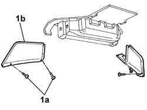

5010B61 EVAPORATOR/CONVEYOR UNIT SIDE LINING on the roof panel, left or right (one) - R.R.
- Path
- Procedures > 50 AUXILIARY UNITS > 5010 HEATING/VENTILATION - MISCELLANEOUS > 5010B HEATING/VENTILATION AIR PIPES AND DUCTS > 5010B61 EVAPORATOR/CONVEYOR UNIT SIDE LINING on the roof panel, left or right (one) - R.R.
- Kind
- repair procedure (removal / refitting; the operation number is the code)
- Applies to
- all engines; all production periods
- Interactive page
- https://sloeber94.github.io/elrnDB-fDct/en/#/244001227
Applies to: all engines; all production periods; only with equipment: Supplementary air conditioner
 Removing
Removing
 Refitting
RefittingOp. 5010B65 EVAPORATOR/CONVEYOR UNIT MIDDLE LINING on the roof panel - R.R.
1. Undo the fixing bolts (1a) and remove the side trim (1b).

Applies to: all engines; all production periods; only with equipment: Supplementary air conditioner
Refitting
Removing- Position the duct and tighten the fixing bolts.
Op. 5010B65 EVAPORATOR/CONVEYOR UNIT MIDDLE LINING on the roof panel - R.R.
Topics linked from this page (1)
Topics that link to this page (5)
- 5040A58 PIPE FROM EXPANSION VALVE TO COMPRESSOR - R+R
- 5040A71 PIPING BETWEEN THE EXPANSION VALVE AND THE FITTING PLATE ON THE ROOF PANEL - R.R.
- 5040A79 PIPING BETWEEN THE COMPRESSORE AND THE FITTING PLATE ON THE ROOF PANEL - R.R.
- 5040B30 EXPANSION VALVE (TUBE ORIFICE) - R+R
- 5040C60 AIR CONDITIONING EVAPORATING UNIT - R.R.